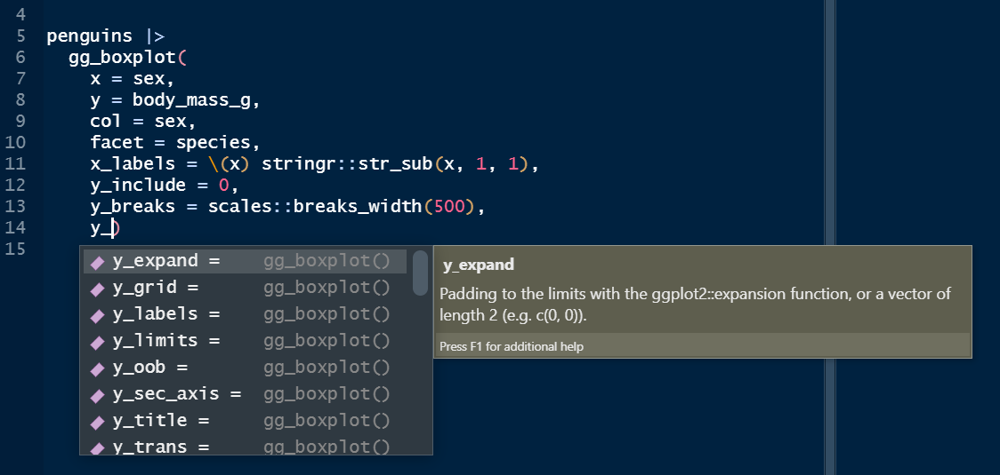
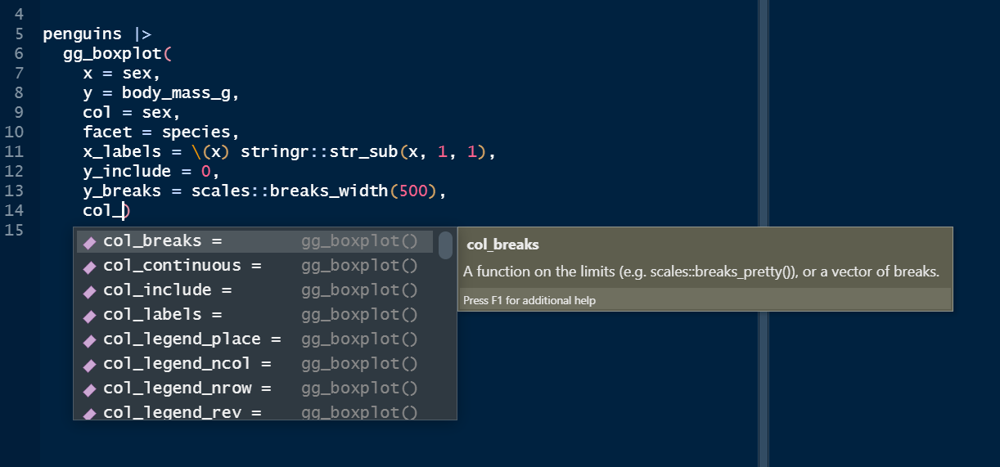

Overview
ggblanket is a package of wrapper functions around the fantastic ggplot2 package.
The primary objective is to simplify ggplot2 visualisation.
Secondary objectives relate to:
- Scope: cover the most useful 80% of what ggplot2 does
- Design: produce well-designed visualisation by default
- Alignment: use conventions generally aligned with ggplot2.
It is intended to be useful for all levels of experience from beginner to expert.
This article will illustrate the essence of how ggblanket works compared to ggplot2.
library(dplyr)
library(ggplot2)
library(ggblanket)
library(palmerpenguins)
penguins <- penguins |>
mutate(sex = stringr::str_to_sentence(sex)) |>
tidyr::drop_na(sex)How it works
To simplify ggplot2 visualisation, the ggblanket package provides:
- Over thirty gg_* wrapper functions to plot a single geom
- A single col argument to colour and fill by a variable
- A pal argument to customise colours
- A facet argument to facet by a variable
- An additional facet2 argument to facet by a second variable
- Prefixed arguments to customise scales, guides, titles and faceting
- Default titles converted with snakecase::to_sentence
- A theme argument to customise the look and feel
- A gg_theme function to create a ggblanket style quick theme
- Access to other geom_* arguments via …
- Pretty default limits, expanding and gridlines
- A powerful gg_blank function for extra flexibility
1. Over thirty gg_* wrapper functions to plot a single geom
ggblanket supports the majority of geoms in ggplot2.
Each gg_* function wraps a ggplot2 ggplot(aes(...)) function with the applicable ggplot2 geom_*() function.
All aesthetics are within the ggplot function, and therefore will inherit to any subsequent geom’s added by default.
Always pipe in your data, so that you can access variable names from the Rstudio auto-complete.
penguins |>
ggplot() +
geom_point(aes(x = flipper_length_mm, y = body_mass_g))
penguins |>
gg_point(
x = flipper_length_mm,
y = body_mass_g)
See the reference for the full list of functions available.
2. A single col argument to colour and fill by a variable
ggblanket merges the col and fill aesthetics of ggplot2 into one concept represented by the col argument. In ggplot2 language, this argument always represents both colour and fill.
penguins |>
ggplot() +
geom_point(aes(x = flipper_length_mm, y = body_mass_g,
col = species))
penguins |>
gg_point(
x = flipper_length_mm,
y = body_mass_g,
col = species)
penguins |>
ggplot() +
geom_density(aes(x = body_mass_g, fill = species))
penguins |>
gg_density(
x = body_mass_g,
col = species)
3. A pal argument to customise colours
The pal argument allows the users to pick the vector of colours they want.
These arguments work in the same way regardless of whether a col variable is added or not.
penguins |>
ggplot() +
geom_histogram(
aes(x = body_mass_g),
fill = "#1B9E77")
penguins |>
gg_histogram(
x = body_mass_g,
pal = "#1B9E77")
penguins |>
ggplot() +
geom_jitter(aes(x = species, y = body_mass_g, col = sex)) +
scale_color_manual(values = c("#1B9E77", "#9E361B"))
penguins |>
gg_jitter(
x = species,
y = body_mass_g,
col = sex,
pal = c("#1B9E77", "#9E361B"))
4. A facet argument to facet by a variable
Faceting is treated essentially as if it were an aesthetic, where users just provide an unquoted variable to facet by.
If a single facet (or facet2) variable is provided, it’ll default to a “wrap” layout. But you can change this with a facet_layout = "grid" argument.
penguins |>
ggplot() +
geom_violin(aes(x = sex, y = body_mass_g)) +
facet_wrap(~species) 
penguins |>
gg_violin(
x = sex,
y = body_mass_g,
facet = species)
5. An additional facet2 argument to facet by a second variable
A facet2 argument is also provided for extra functionality and flexibility.
If both facetand facet2 variables are provided, then it’ll default to a “grid” layout of facet by facet2. But you can change this with a facet_layout = "wrap" argument.
penguins |>
ggplot() +
geom_histogram(aes(x = flipper_length_mm)) +
facet_grid(rows = vars(species), cols = vars(sex))
penguins |>
gg_histogram(
x = flipper_length_mm,
facet = sex,
facet2 = species)
6. Prefixed arguments to adjust scales, guides, titles and faceting
These prefixed arguments are designed to work with the Rstudio autocomplete to help you remember and find the adjustment you need.
Determine whether what you want to change relates to x, y, col or facet, and then type this prefix and press the tab key to access the list from autocomplete. Then use arrow keys, and press tab again to select.


penguins |>
ggplot() +
geom_jitter(aes(x = species, y = body_mass_g, col = sex)) +
expand_limits(y = 0) +
scale_x_discrete(labels = \(x) stringr::str_sub(x, 1, 1)) +
scale_y_continuous(breaks = scales::breaks_width(1500),
labels = scales::label_number(big.mark = " "),
trans = "sqrt") +
labs(y = "Body mass (g)")
penguins |>
gg_jitter(
x = species,
y = body_mass_g,
col = sex,
x_labels = \(x) stringr::str_sub(x, 1, 1),
y_include = 0,
y_breaks = scales::breaks_width(1500),
y_labels = scales::label_number(big.mark = " "),
y_trans = "sqrt",
y_title = "Body mass (g)")
7. Default titles converted with snakecase::to_sentence
This will make quicker to get to a plot that has titles that are good for external people to see, and will often work nicely for your snakecase column names.
You might have noticed this in the examples above, where ggblanket by default makes a title of the variable body_mass_g called Body mass g - whereas ggplot2 leaves it as is.
For titles that you need to change manually in ggblanket, you can use the x_title, y_title, or col_title arguments.
Additionally, you can use x_title = "" to remove titles within the gg_* function and equivalent for the y and col titles.
penguins |>
ggplot() +
geom_blank(aes(x = flipper_length_mm, y = body_mass_g)) +
labs(title = "Penguins body mass by flipper length",
subtitle = " Palmer Archipelago, Antarctica",
x = "Flipper length (mm)",
caption = "Source: Gorman, 2020")
penguins |>
gg_blank(
x = flipper_length_mm,
y = body_mass_g,
title = "Penguins body mass by flipper length",
subtitle = " Palmer Archipelago, Antarctica",
x_title = "Flipper length (mm)",
caption = "Source: Gorman, 2020")
8. A theme argument to customise the look and feel
This allows you to utilise the simplicity of ggblanket, while making content that has your required look and feel.
By using the theme argument, your theme will control all theme aspects, but with some gg_* magic thrown in relating to (1) the placement of the legend and (2) gridline removal depending on plot orientation.
However, if you want your theme to adjust everything, then just add your theme as a layer instead.
penguins |>
gg_point(x = flipper_length_mm,
y = body_mass_g,
col = sex,
facet = species,
pal = c("#1B9E77", "#9E361B"),
theme = theme_grey())
penguins |>
gg_point(x = flipper_length_mm,
y = body_mass_g,
col = sex,
facet = species,
pal = c("#1B9E77", "#9E361B")) +
theme_grey()
9. A gg_theme function to create a quick theme
The gg_theme function allows you to tweak the default ggblanket theme by changing text, background colours, axis lines, ticks and gridlines.
custom_theme <- gg_theme(
text_size = 13,
plot_background_pal = "white",
panel_background_pal = "white"
)
storms |>
group_by(year) |>
filter(between(year, 1980, 2020)) |>
summarise(wind = mean(wind, na.rm = TRUE)) |>
gg_col(
x = year,
y = wind,
x_labels = \(x) stringr::str_sub(x, 3, 4),
x_expand = c(0, 0),
theme = custom_theme)
10. Access to other geom_* arguments via ...
This relates to all other arguments other than the mapping argument with aesthetics.
All arguments and can be identified through the help on the relevant ggplot2::geom_* function.
Common arguments to add are size, linewidth and width.
Additionally, you can use the colour or fill arguments to turn off part of the ggblanket col aesthetic (e.g. colour = NA or fill = NA), or fix it to single colour.
penguins |>
gg_smooth(
x = flipper_length_mm,
y = body_mass_g,
col = sex,
linewidth = 0.5, #accessed via geom_smooth
level = 0.99, #accessed via geom_smooth
col_legend_place = "t",
col_title = "",
col_labels = stringr::str_to_sentence,
colour = "white") #accessed via geom_smooth
11. Pretty default limits, expanding and gridlines
Where the orientation is normal (i.e. vertical):
- Default x scale limits and expanding are as per ggplot2 defaults
- Default numeric non-transformed y scale limits start and end on a break with zero expanding
- Default categorical y scale limits and expanding are as per ggplot2 defaults
- The ggblanket function removes vertical gridlines, unless specified otherwise
It does the opposite where the orientation is horizontal.
Default gridlines work with this, and the effect is that the plot looks very nice and symmetrical… to my eye anyway.
12. A powerful gg_blank function for extra flexibility
The gg_blank function can be used to:
- make plots with other non-supported aesthetics, e.g.
alpha,size,linewidth,shape, andlinetype
library(patchwork)
p1 <- penguins |>
gg_blank(
x = flipper_length_mm,
y = body_mass_g,
col = species,
pal = rep(pal_default(1), 3),
x_breaks = scales::breaks_pretty(3),
col_legend_ncol = 2) +
geom_point(aes(alpha = species)) +
labs(alpha = "Species") +
scale_alpha_manual(values = c(0.1, 1, 0.5))
p2 <- penguins |>
gg_blank(
x = flipper_length_mm,
y = body_mass_g,
col = species,
x_breaks = scales::breaks_pretty(3),
col_legend_ncol = 2) +
geom_point(aes(alpha = species)) +
labs(alpha = "Species") +
scale_alpha_manual(values = c(0.1, 1, 0.5))
p1 + p2
- make plots with non-supported geoms that make a stat based on the positional x and y aesthetics (i.e not the col aesthetic)
iris |>
mutate(Species = stringr::str_to_sentence(Species)) |>
gg_blank(
x = Sepal.Width,
y = Sepal.Length,
col = Species,
facet = Species,
col_legend_place = "r") +
ggdensity::geom_hdr(colour = NA) +
labs(alpha = "Probs") +
theme(legend.title = element_text(margin = margin(t = 10)))
- make plots with multiple geoms, where the first non-blank layer does not have a col aesthetic but a later layer does require a col aesthetic.
penguins |>
group_by(sex, species) |>
summarise(across(body_mass_g, sum)) |>
mutate(upper = body_mass_g * 1.05) |>
mutate(lower = body_mass_g * 0.95) |>
gg_blank(
x = sex,
y = body_mass_g,
ymin = lower,
ymax = upper,
col = sex,
facet = species,
y_include = 0,
col_legend_place = "b"
) +
geom_col(aes(x = sex, y = body_mass_g),
fill = "#d3d3d3",
inherit.aes = FALSE,
width = 0.75) +
geom_errorbar(width = 0.33) 
Thanks!
Thank you to all authors and contributors to ggplot2, tidyverse, and the wider R ecosystem. If you like ggblanket, please give the repository a star and help spread the word.